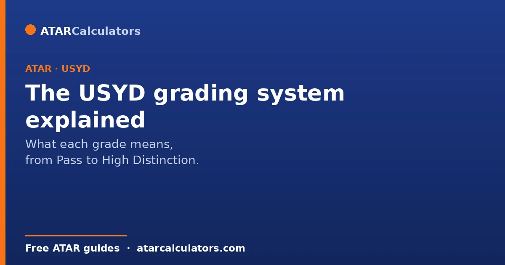
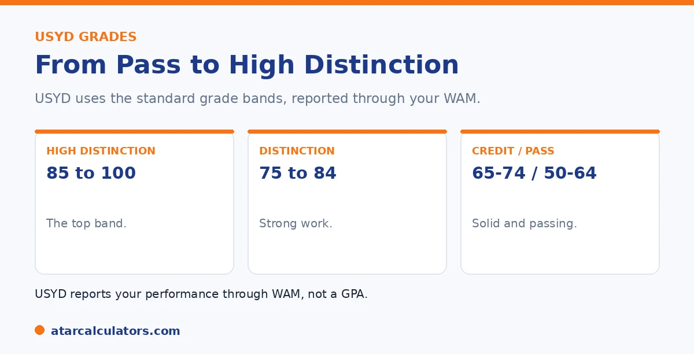

Here is the short version. The University of Sydney uses five grades. High Distinction covers marks of 85 to 100, and Distinction covers 75 to 84. Credit is 65 to 74, Pass is 50 to 64, and Fail is 0 to 49. Your overall performance across units is summed up by the WAM, or Weighted Average Mark. That is Sydney's official measure rather than a GPA.
If you are new to Sydney, the grade names can be confusing at first, especially the bands behind each one. They are simpler than they look.
Below is the full grading system. To track your average, use our USYD calculator.
Key takeaways
- High Distinction is a mark of 85 to 100.
- Distinction is 75 to 84.
- Credit is 65 to 74.
- Pass is 50 to 64, and Fail is 0 to 49.
- Your overall result is summed up by the WAM.
- Sydney uses the WAM, not a GPA, as its official measure.
The five grades
Sydney uses five grades, each tied to a mark range. Here they are in full.
| Grade | Mark range | Grade points (7-point) |
|---|---|---|
| High Distinction (HD) | 85 to 100 | 7 |
| Distinction (D) | 75 to 84 | 6 |
| Credit (CR) | 65 to 74 | 5 |
| Pass (PS) | 50 to 64 | 4 |
| Fail (FA) | 0 to 49 | 0 |
Sydney uses these grades with the WAM. The grade points shown are for an unofficial GPA estimate on a common 7-point scale, not an official Sydney figure.
So the grade you get for a unit depends only on your mark falling into one of these bands. A mark of 85 or more is a High Distinction, the top grade, while 50 to 64 is a Pass.
High Distinction and Distinction
The top two grades are the ones students aim for. A High Distinction, for marks of 85 and above, is the highest grade and signals excellent work. A Distinction, for marks of 75 to 84, is a strong result in its own right.

An average in the distinction band or above is well regarded, and supports honours and scholarship applications. See our guide on the distinction average.
How your grades add up
Individual grades describe single units. Your overall performance across your degree is summed up by the WAM, Sydney's official measure. It is the credit-weighted average of your actual marks, out of 100.
Note that Sydney uses the WAM, not a GPA. So while you get grades for units, your headline figure is your WAM. See our guide on whether Sydney uses WAM or GPA.
Want to track your average?
Try the USYD calculator →Repeating and failed units
A few rules are worth knowing. A Fail, for a mark below 50, counts toward your WAM at its actual mark, which can pull your average down. Sydney does allow students to repeat units, and grade replacement rules can apply in some cases.
These details can vary by faculty and change over time, so check your own faculty's rules. See our guide on why a WAM can drop.
Why the bands matter
Knowing the bands helps you read your results clearly. A mark of 74 and a mark of 75 sit one point apart but fall in different grades, Credit and Distinction. So small differences can cross a boundary.
That is useful to know when a mark is borderline, since nudging it across a band can matter for how your result reads. See our guide on what counts as a good result at Sydney.
The bands matter more than they first appear. This is because so much downstream depends on which side of a boundary a mark lands. Two consequences stand out. First, for anything grade-based, a boundary is a genuine step change. A 74 and a 75 differ by a single mark, but sit in different grades. Where results are read as grades, that one mark can change how your record looks. On a grade-point scale, it can nudge your GPA. Second, near honours and graduation thresholds, boundaries can decide a classification. So a mark pushed from just below to just above a band can carry real weight. This gives you a concrete, efficient way to direct effort late in a session. Rather than spreading revision evenly, identify the units where your predicted mark is hovering a point or two below a band. Concentrate there. This is because crossing the boundary yields more than the same effort in a unit already settled mid-band. It also flags where a small slip is costly. A mark that drops just under a boundary loses a grade for the sake of a point. Knowing exactly where Sydney's bands fall, and watching your borderline units against them, turns the grade scale from something you passively get into something you can steer. It protects the results that determine how your record reads, and what thresholds you clear.
The USYD grade bands in detail
The University of Sydney uses five grade bands. A High Distinction is 85 to 100, a Distinction 75 to 84, a Credit 65 to 74, a Pass 50 to 64, and a Fail is below 50. These thresholds are set by the university and apply across most units.
Note that USYD sets its High Distinction at 85, higher than the 80 some other universities use. So a mark that would be a High Distinction elsewhere may be a Distinction at USYD. This is exactly why university-specific grade bands matter, and why you should use USYD’s own bands for your results.
Why USYD does not issue an official GPA
Unlike many universities, USYD uses a Weighted Average Mark as its official measure of performance, and does not issue an official GPA on your transcript. Your WAM is the number USYD itself uses for honours, awards and progression.
So at USYD, WAM is primary. Any GPA you calculate is an unofficial estimate, useful mainly when an external body, such as an overseas university, asks for a GPA. For USYD’s own purposes, your WAM is what counts. See USYD WAM vs GPA.
The unofficial GPA point values
If you do need a GPA, the common approach is to map each USYD grade to a point on the 7-point scale: High Distinction 7, Distinction 6, Credit 5, Pass 4 and Fail 0. You then take the credit-weighted average of those points.
Because this is unofficial at USYD, treat the result as an estimate rather than a definitive figure. It is a reasonable way to express your USYD performance in GPA terms for an external application. See how to calculate your USYD GPA.
Non-graded and pass-fail results
Some USYD units are assessed on a satisfied-requirements or pass-fail basis, without a graded mark. These usually sit outside your WAM, neither raising nor lowering it, because they carry no percentage to average.
So if your WAM does not match your own calculation, a non-graded unit may be the reason. Check which of your units are graded and which are not, since only graded units feed your WAM and any GPA estimate.
Using your grades to plan ahead
Knowing USYD’s bands helps you plan. Because a Distinction starts at 75 and a High Distinction at 85, you can see exactly how far a given mark is from the next band, and target the units where you are closest.
This is useful for lifting your WAM efficiently, since a few marks that cross a band boundary, or simply raise your average, are worth targeting. Understanding the bands turns your transcript into something you can actively work with.
How USYD grades compare to other universities
Because USYD sets its High Distinction at 85 and uses WAM rather than an official GPA, its system differs from universities that use a High Distinction of 80 or lead with GPA. So a raw average does not always translate directly between institutions.
This matters if you are comparing offers, transferring, or applying elsewhere. Use USYD’s own bands for your USYD results, and each other institution’s bands for theirs, rather than assuming a single national standard. The differences are exactly why university-specific guides exist.
Common questions
What grades does the University of Sydney use?
Five: High Distinction for marks of 85 to 100, Distinction for 75 to 84, Credit for 65 to 74, Pass for 50 to 64, and Fail for 0 to 49. Your overall performance is summed up by the WAM, Sydney's official measure.
What mark is a High Distinction at USYD?
A mark of 85 or above. High Distinction is Sydney's top grade, signalling excellent work. The next grade down, Distinction, is for marks from 75 to 84, which is also a strong result.
Does USYD use a GPA?
No. Sydney uses the WAM, or Weighted Average Mark, as its official measure, not a GPA. You get grades for individual units, but your overall headline figure is your WAM, the credit-weighted average of your marks.
What happens to a failed unit at USYD?
A Fail, for a mark below 50, counts toward your WAM at its actual mark, which can pull your average down. Sydney allows students to repeat units, and grade replacement rules can apply in some cases. Check your faculty's rules.
Why do the grade bands matter?
Because small mark differences can cross a boundary. A mark of 74 is a Credit and 75 is a Distinction, just one point apart. So when a mark is borderline, nudging it across a band changes how your result reads.
Track your Sydney results
See where your average sits, from your marks and credit points. Free, and no signup.
Open the USYD calculator →Related guides
This guide is general information for students, not formal academic advice. The University of Sydney's official academic metric is the WAM, and it does not issue or calculate an official GPA. Any GPA you work out is an unofficial estimate for your own use. Grade bands and honours requirements can vary by faculty and change over time, so always confirm with the University of Sydney directly. Reviewed by the ATARCalculators Editorial Team.